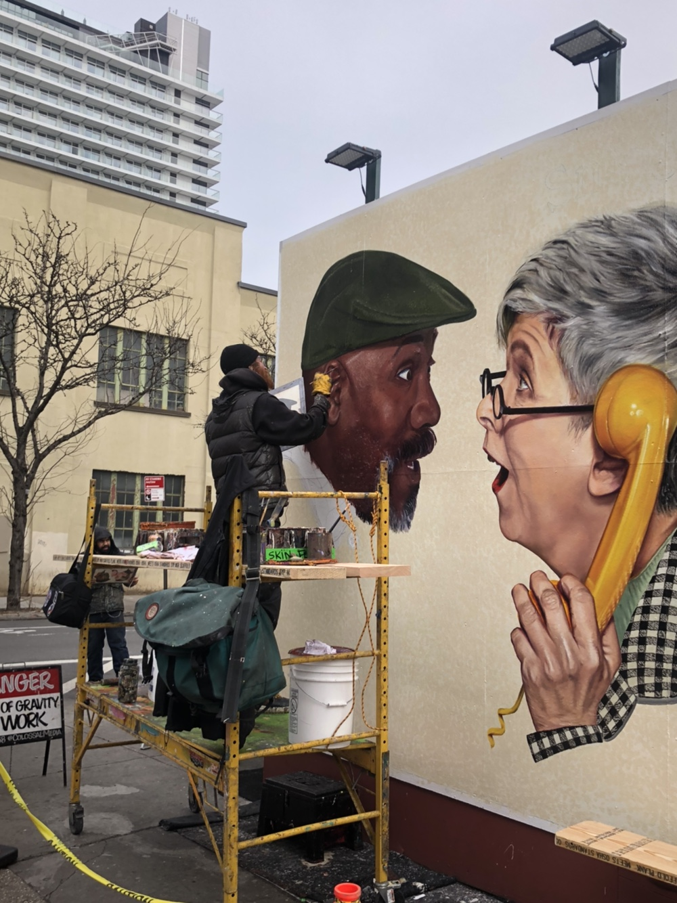

Tokyo
 ↖ image click !
↖ image click !
- Place
子園児 こえんじ, 三軒座や さんげんざや, 田園調布駅 でんえんちょうふ, 自由が丘 じゆうがおか, 代官山 antique market, 森美術館, ネズ美術館, ハリーポッタースタジオ(2023) ‥‥- Food
豚カツ, ラーメン, モンブラン, リコタチーズアンバダー, 365日 ‥‥ ↖ image click !
- Place
Central Park, East Village, The high line, Rockfeller Center, Brooklyn, WilliamsBurg, Smorgasburg food market ‥‥- Food
Everything Bagel, Buger Joint, The Ruby's, Flex mussles, Martha's bakery ‥‥
↖ image click !
- Place
子園児 こえんじ, 三軒座や さんげんざや, 田園調布駅 でんえんちょうふ, 自由が丘 じゆうがおか, 代官山 antique market, 森美術館, ネズ美術館, ハリーポッタースタジオ(2023) ‥‥- Food
豚カツ, ラーメン, モンブラン, リコタチーズアンバダー, 365日 ‥‥